This is another research iteration with Opus 5.5, see PR #215. I verified every step and concept and wrote most of the prose myself (where I didn’t, I guided the LLMs carefully, as I am not a native English speaker and help is always useful), so any remaining mistakes are my own. Feedback is welcome 🙂!
Many time series models have one latent variable per time step. A local level model, for example, has one random-walk increment per week. These variables are independent under the prior, but the data couple them, because every observation depends on all the increments before it.
This coupling is a problem for mean-field variational inference. A mean-field guide, such as AutoNormal, has one independent Normal per coordinate and cannot represent the correlation between increments. The coupling also slows down NUTS when its mass matrix is diagonal. In this notebook we study a reparameterization that addresses this issue for variational inference. We say in the conclusion what we expect for NUTS.
The reparameterization comes from Pyro’s forecasting module, pyro.contrib.forecast. It is a pair of transforms, the Haar and the DCT transform, which rewrite every time-indexed latent variable in a Haar wavelet basis or in a discrete cosine basis. Both bases are orthonormal, so the change of variables is a rotation. The model does not change, only the coordinates that the guide works with, and in the new coordinates the coupling is much weaker.
The transforms HaarTransform and DiscreteCosineTransform, and the reparameterizers HaarReparam and DiscreteCosineReparam, are part of NumPyro since version 0.22 (see numpyro#2208). The function time_reparam of numpyro_forecast applies them to the latent variables under the time plate of a forecasting model (see numpyro_forecast#135).
We consider three questions: what the reparameterization is, why it helps a mean-field guide, and how to apply it in NumPyro. We first work with a model where we can compute everything exactly, and then we move to a real forecasting model.
We assume that you have used SVI and NUTS in NumPyro before. For an introduction to SVI see PyData Berlin 2025: Introduction to Stochastic Variational Inference with NumPyro. The forecasting example is the model from From Pyro to NumPyro: Forecasting a univariate, heavy tailed time series.
Prepare Notebook
We need NumPyro 0.22 or later and numpyro_forecast 0.4 or later.
from collections.abc import Callable
from enum import StrEnum
from time import perf_counter
from typing import NamedTuple
import arviz as az
import jax
import jax.numpy as jnp
import matplotlib.pyplot as plt
import numpy as np
import numpyro
import numpyro.distributions as dist
import polars as pl
import seaborn as sns
from jax import random
from jax.example_libraries.optimizers import exponential_decay
from jaxtyping import Array, Float, ScalarLike, UInt
from numpyro import handlers
from numpyro.distributions.transforms import (
DiscreteCosineTransform,
HaarTransform,
Transform,
)
from numpyro.infer import (
MCMC,
NUTS,
SVI,
Predictive,
Trace_ELBO,
init_to_uniform,
init_to_value,
)
from numpyro.infer.autoguide import AutoNormal
from numpyro.infer.reparam import DiscreteCosineReparam, HaarReparam, LocScaleReparam
from numpyro.infer.util import log_density
from numpyro.optim import Adam
from numpyro_forecast import (
Horizon,
draw_posterior,
eval_crps,
forecast,
innovations,
predict,
predict_in_sample,
time_reparam,
to_datatree,
)
from numpyro_forecast.datasets import load_bart_weekly
from numpyro_forecast.features import fourier_features
from scipy.optimize import minimize
numpyro.set_host_device_count(n=4)
numpyro.enable_x64()
HDI_PROB = 0.94
az.style.use("arviz-darkgrid")
az.rcParams["stats.ci_kind"] = "hdi"
az.rcParams["stats.ci_prob"] = HDI_PROB
plt.rcParams["figure.figsize"] = [10, 6]
plt.rcParams["figure.dpi"] = 100
plt.rcParams["figure.facecolor"] = "white"
%load_ext jaxtyping
%jaxtyping.typechecker beartype.beartype
%config InlineBackend.figure_format = "retina"We fix the random key of the notebook. Every sampling call below splits a new key from it.
seed: int = 42
rng_key = random.PRNGKey(seed=seed)Local Level Model
We start with the simplest model that has the problem. Let \(T\) be the number of time steps and \(y_t\) the observation at time \(t = 1, \ldots, T\). We use the notation of the local level model in the UnobservedComponents class of statsmodels. The observation \(y_t\) is a noisy measurement of a latent level \(\mu_t\), and the level is a random walk with increments \(\eta_t\).
Our target is the posterior of the increments given the observations. We want to know how well a mean-field guide can approximate it.
Let \(\sigma_\varepsilon\) be the scale of the observation noise \(\varepsilon_t\) and \(\sigma_\eta\) the scale of the increments \(\eta_t\). The model is
\[\begin{align*} y_t & = \mu_t + \varepsilon_t, & \varepsilon_t & \sim \text{Normal}(0, \sigma_\varepsilon), \\ \mu_t & = \mu_{t-1} + \eta_t, & \eta_t & \sim \text{Normal}(0, \sigma_\eta), \end{align*}\]
with \(\mu_0 = 0\). Here the second argument of \(\text{Normal}\) is the standard deviation. The statsmodels documentation writes the variances \(\sigma_\varepsilon^2\) and \(\sigma_\eta^2\) instead.
The latent variables are the increments \(\eta = (\eta_1, \ldots, \eta_T)\), not the levels. This is how the Pyro forecasting tutorial and the innovations building block of numpyro_forecast write a random walk: sample white noise and take a cumulative sum, \(\mu_t = \sum_{s \le t} \eta_s\). In vector form the level is \(\mu = L \eta\), where \(L\) is the \(T \times T\) lower-triangular matrix of ones.
In this first part we keep the two scales \(\sigma_\eta\) and \(\sigma_\varepsilon\) fixed. Then the model is linear and Gaussian and we can compute everything analytically. We come back to unknown scales and to a non-Gaussian likelihood in the ridership example below.
First, let’s write the model in NumPyro. We use the names of the Pyro tutorial: the increments are the site drift, \(\sigma_\eta\) is drift_scale and \(\sigma_\varepsilon\) is sigma. The time axis is an event dimension of the drift site. We write a generative model without observations, and we condition it on data later.
T_TOY = 256
DRIFT_SCALE = 0.2
SIGMA = 1.0
def local_level_model(t_obs: int, drift_scale: float, sigma: float) -> None:
"Generative local level model with the increments as latent variables."
drift = numpyro.sample(
"drift", dist.Normal(0.0, drift_scale).expand([t_obs]).to_event(1)
)
level = numpyro.deterministic("level", jnp.cumsum(drift))
numpyro.sample("y", dist.Normal(level, sigma).to_event(1))
toy_args = (T_TOY, DRIFT_SCALE, SIGMA)Next, we simulate one data set from the model itself. We use \(T = 256\) time steps, \(\sigma_\eta = 0.2\) and \(\sigma_\varepsilon = 1\).
rng_key, rng_subkey = random.split(rng_key)
prior_draw = Predictive(local_level_model, num_samples=1)(rng_subkey, *toy_args)
toy_drift = prior_draw["drift"][0]
toy_level = prior_draw["level"][0]
toy_y = prior_draw["y"][0]Let’s plot the simulated observations together with the level that generated them.
toy_time = jnp.arange(1, T_TOY + 1)
fig, ax = plt.subplots()
ax.plot(
toy_time,
toy_y,
color="black",
alpha=0.7,
label="observations $y_t$",
)
ax.plot(toy_time, toy_level, color="C3", linewidth=2, label="true level $\\mu_t$")
ax.set(xlabel="time step $t$", ylabel="$y_t$")
ax.legend(loc="upper center", bbox_to_anchor=(0.5, -0.12), ncol=2)
fig.suptitle("Simulated Local Level Data", fontsize=18, fontweight="bold");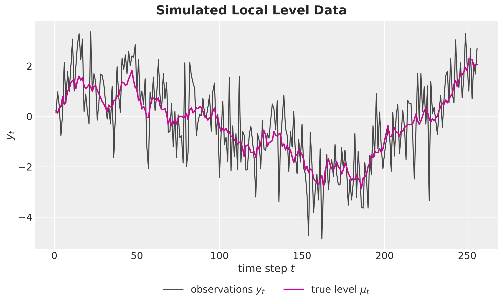
The level moves slowly relative to the noise, because one increment has a scale of \(0.2\) and the noise a scale of \(1\). Over \(256\) time steps the increments add up, and the level moves over a range of several units. The observations therefore carry a clear signal about the path of the level, but not about any single increment.
Finally, we condition the generative model on the simulated observations with the effect handler handlers.condition. The resulting toy_model is the model that we study in the first part of the notebook.
toy_model = handlers.condition(local_level_model, data={"y": toy_y})
numpyro.render_model(
toy_model,
model_args=toy_args,
render_params=True,
render_distributions=True,
)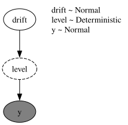
Exact Posterior
The prior of \(\eta\) is Gaussian and the likelihood is Gaussian in \(L \eta\). Therefore the posterior \(\text{P}(\eta \mid y)\) is a multivariate Gaussian.
How do we find its parameters? Up to a constant, the log posterior is the sum of the log prior and the log likelihood:
\[\log \text{P}(\eta \mid y) = -\frac{1}{2 \sigma_\eta^2}\, \eta^\top \eta - \frac{1}{2 \sigma_\varepsilon^2}\, (y - L \eta)^\top (y - L \eta) + \text{const} .\]
This is a quadratic function of \(\eta\). Let \(\bar{\eta}\) be the posterior mean and \(\Lambda\) the precision matrix (the inverse of the covariance). The precision is minus the matrix of second derivatives (the Hessian) of the log posterior, and the mean is the point where the gradient is zero. Expanding the square gives
\[\Lambda = \frac{1}{\sigma_\eta^2} I + \frac{1}{\sigma_\varepsilon^2} L^\top L, \qquad \bar{\eta} = \frac{1}{\sigma_\varepsilon^2} \Lambda^{-1} L^\top y .\]
In other words, this is the posterior of a Bayesian linear regression with design matrix \(L\), weights \(\eta\) and an isotropic Gaussian prior on the weights. See equation (2.8) of Rasmussen and Williams (2006) or equations (3.53) and (3.54) of Bishop (2006).
We make two remarks:
The precision does not depend on the data. It only depends on \(T\) and on the two scales. The geometry we study below is a property of the model, not of one data set.
The coupling comes from the cumulative sum. The entry \((L^\top L)_{ij} = T + 1 - \max(i, j)\) counts the observations that depend on both \(\eta_i\) and \(\eta_j\). Two increments are coupled through every observation at or after the later of the two.
Let’s compute the exact posterior of the increments and of the level \(\mu = L \eta\), which has mean \(L \bar{\eta}\) and covariance \(L \Lambda^{-1} L^\top\). We also check the two formulas with automatic differentiation of the log density of toy_model: its gradient must be zero at \(\bar{\eta}\), and its Hessian must be \(-\Lambda\).
def posterior_precision(
t_obs: int, drift_scale: ScalarLike, sigma: ScalarLike
) -> Float[Array, "t t"]:
"Posterior precision of the increments of the local level model."
cumsum = jnp.tril(jnp.ones((t_obs, t_obs)))
return jnp.eye(t_obs) / drift_scale**2 + cumsum.T @ cumsum / sigma**2
def toy_log_joint(drift: Float[Array, " t"]) -> Float[Array, ""]:
"Log joint density of the conditioned local level model at the increments."
log_joint, _ = log_density(toy_model, toy_args, {}, {"drift": drift})
return log_joint
cumsum_matrix = jnp.tril(jnp.ones((T_TOY, T_TOY)))
precision = posterior_precision(*toy_args)
covariance = jnp.linalg.inv(precision)
drift_mean = covariance @ cumsum_matrix.T @ toy_y / SIGMA**2
level_mean = cumsum_matrix @ drift_mean
level_covariance = cumsum_matrix @ covariance @ cumsum_matrix.T
level_sd = jnp.sqrt(jnp.diag(level_covariance))
# The gradient is zero at the mean.
np.testing.assert_allclose(jax.grad(toy_log_joint)(drift_mean), 0, atol=1e-8)
# The Hessian is minus the precision.
np.testing.assert_allclose(
jax.hessian(toy_log_joint)(drift_mean), -precision, atol=1e-8
)Let’s plot the exact posterior of the level and its \(94\%\) highest density interval (HDI).
rng_key, rng_subkey = random.split(rng_key)
exact_level_draws = random.multivariate_normal(
rng_subkey, level_mean, level_covariance, shape=(1, 4_000)
)
exact_tree = az.from_dict(
{
"posterior": {"level": np.asarray(exact_level_draws)},
"observed_data": {"y": np.asarray(toy_y)},
"constant_data": {"t": np.asarray(toy_time, dtype=float)},
},
coords={"time": np.asarray(toy_time)},
dims={"level": ["time"], "y": ["time"], "t": ["time"]},
)
pc = az.plot_lm(
exact_tree,
x="t",
y="level",
y_obs="y",
group="posterior",
smooth=False,
visuals={
"pe_line": {"color": "C0", "label": "posterior mean of the level"},
"ci_band": {
"color": "C0",
"alpha": 0.3,
"label": r"level posterior $94\%$ HDI",
},
"observed_scatter": False,
},
figure_kwargs={"figsize": (10, 6)},
)
fig = pc.viz["figure"].item()
ax = fig.axes[0]
ax.plot(
toy_time, toy_y, color="black", alpha=0.7, linewidth=1, label="observations $y_t$"
)
ax.plot(toy_time, toy_level, color="C3", linewidth=2, label="true level $\\mu_t$")
ax.set(xlabel="time step $t$", ylabel="$y_t$", title="")
ax.legend()
fig.suptitle("Exact Posterior of the Level", fontsize=18, fontweight="bold");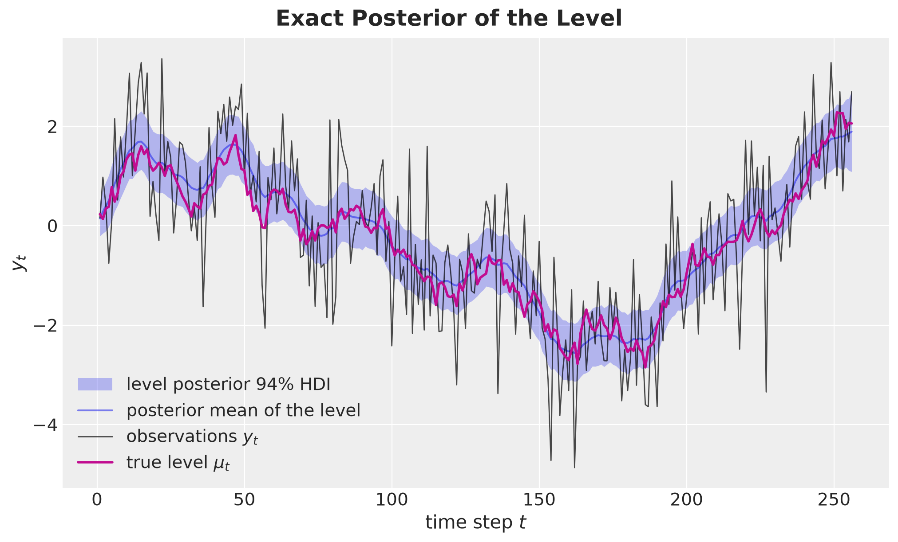
The figure shows the data, the level that we want to recover, and its exact posterior.
The posterior mean follows the true level, and the true level stays inside the HDI most of the time. Away from the two ends, the HDI has a constant width: the data constrain the level with the same precision at every time step. We will see below that a mean-field guide on the increments cannot reproduce this property.
Posterior Geometry
What does the posterior of the increments look like? The contours of a Gaussian density are ellipsoids, and the eigenvectors of \(\Lambda\) are their axes.
A large eigenvalue is a stiff direction, where the data leave little freedom. A small eigenvalue is a loose direction.
Let’s compute the eigendecomposition of \(\Lambda\) numerically. We sort the eigenvalues from the largest to the smallest, so that direction \(k = 0\) is the stiffest one, and we fix the sign of each eigenvector so that its first entry is positive. We also check that direction \(k\) changes sign \(k\) times, which confirms that the directions are sorted from the smoothest to the most oscillating.
eigenvalues, eigenvectors = jnp.linalg.eigh(precision)
order = jnp.argsort(eigenvalues)[::-1]
eigenvalues = eigenvalues[order]
eigenvectors = eigenvectors[:, order]
eigenvectors = eigenvectors * jnp.sign(eigenvectors[0])
sign_changes = (jnp.diff(jnp.sign(eigenvectors), axis=0) != 0).sum(axis=0)
np.testing.assert_array_equal(sign_changes, jnp.arange(T_TOY))The check passes. Now we plot the four stiffest directions (left) and, for every direction, the posterior variance relative to the prior variance (right).
Along direction \(k\) the posterior variance is \(1 / \text{eig}_k(\Lambda)\) and the prior variance is \(\sigma_\eta^2\). We call this ratio the shrinkage of direction \(k\). A ratio close to \(1\) means that the data say nothing about that direction, and a ratio close to \(0\) means that the data determine it.
shrinkage = 1 / (DRIFT_SCALE**2 * eigenvalues)
fig, axes = plt.subplots(nrows=1, ncols=2, figsize=(15, 5))
for i in range(4):
axes[0].plot(toy_time, eigenvectors[:, i], color=f"C{i}", label=f"$v_{i}$")
axes[0].set(
xlabel="time step $t$",
ylabel="weight on the increment $\\eta_t$",
title="The four stiffest directions",
)
axes[0].legend(loc="upper center", bbox_to_anchor=(0.5, -0.15), ncol=4)
axes[1].plot(toy_time, shrinkage, "o-", color="black", markersize=3)
axes[1].axhline(0.5, color="gray", linestyle="--", label="half of the prior variance")
axes[1].set(
xscale="log",
xlabel="direction $k + 1$ (log scale)",
ylabel="posterior variance / prior variance",
title="Shrinkage by direction",
ylim=(0, 1.05),
)
axes[1].legend(loc="upper center", bbox_to_anchor=(0.5, -0.15))
fig.suptitle(
"Principal Directions of the Posterior of the Increments",
fontsize=18,
fontweight="bold",
);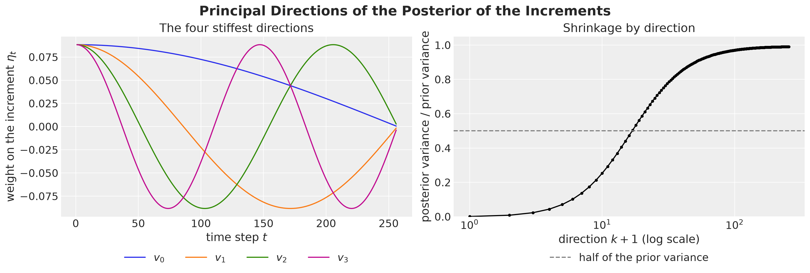
The left panel shows the weights of the four stiffest directions on the increments. The right panel shows how much of the prior variance is left along each direction.
The stiffest direction \(v_0\) moves all the increments in the same direction. This shifts the level at every later time step, and every observation constrains it. The next directions look like cosines of increasing frequency. The oscillating directions barely move the level, because consecutive increments cancel out, and the data do not constrain them. Only \(16\) of the \(256\) directions lose more than half of their prior variance.
The ellipsoid is therefore very elongated. The ratio between the largest and the smallest eigenvalue of \(\Lambda\), its condition number, is about \(1057\):
eigenvalues.max() / eigenvalues.min()Array(1057.01655449, dtype=float64)Here is why this matters for the reparameterization. In the basis of the eigenvectors the posterior precision is diagonal, so a mean-field guide is exact there.
The right panel of the figure above adds that the data only constrain the few smoothest directions. The other directions stay close to the prior, which is isotropic, so any orthonormal basis of those directions is as good as the eigenvectors, as long as it does not mix them with the stiff ones. A fixed basis therefore only has to separate the smooth directions from the oscillating ones, and this is what the two transforms of the next section do.
We cannot draw the ellipsoid in \(256\) dimensions, but we can draw two-dimensional slices through its center. A slice fixes all the other coordinates at their posterior mean. The conditional posterior of the two remaining coordinates is Gaussian, and its precision is the corresponding \(2 \times 2\) block of \(\Lambda\).
We draw the contour at one standard deviation, that is the points \(x\) with \(x^\top \Lambda_{\text{block}}\, x = 1\), for two kinds of slices:
Stiffest and loosest directions. The plane of \(v_{T-1}\) and \(v_0\), where the block is diagonal.
Adjacent increments. The plane of two increments \(\eta_t\) and \(\eta_{t+1}\), for \(t = 1\), \(128\) and \(255\).
The dashed circle is the same contour for the prior, with radius \(\sigma_\eta = 0.2\).
def contour_2d(
block: Float[Array, "2 2"], num_points: int = 200
) -> Float[Array, "2 n"]:
"Points x with x^T block x = 1, the one-sigma contour of a 2D Gaussian."
angles = jnp.linspace(0, 2 * jnp.pi, num_points)
circle = jnp.stack([jnp.cos(angles), jnp.sin(angles)])
# If block = C C^T (Cholesky), then x = C^{-T} u satisfies x^T block x = u^T u = 1.
cholesky = jnp.linalg.cholesky(block)
return jnp.linalg.solve(cholesky.T, circle)
principal_block = jnp.diag(eigenvalues[jnp.array([-1, 0])])
fig, axes = plt.subplots(nrows=1, ncols=2, figsize=(15, 7), sharex=True, sharey=True)
axes[0].plot(*contour_2d(principal_block), color="black", label="posterior")
for i, t in enumerate([1, 128, 255]):
pair = jnp.array([t - 1, t]) # zero-based positions of eta_t and eta_{t+1}
block = precision[jnp.ix_(pair, pair)]
axes[1].plot(*contour_2d(block), color=f"C{i}", label=f"$t = {t}$")
for ax in axes:
ax.plot(
*contour_2d(jnp.eye(2) / DRIFT_SCALE**2),
color="gray",
linestyle="--",
label="prior",
)
ax.set_aspect("equal")
axes[0].set(
xlabel="coordinate along $v_{T-1}$ (loosest)",
ylabel="coordinate along $v_0$ (stiffest)",
title="Stiffest and loosest directions",
)
axes[1].set(
xlabel="$\\eta_t - \\bar{\\eta}_t$",
ylabel="$\\eta_{t+1} - \\bar{\\eta}_{t+1}$",
title="Pairs of adjacent increments",
)
axes[0].legend(loc="upper center", bbox_to_anchor=(0.5, -0.15), ncol=2)
axes[1].legend(loc="upper center", bbox_to_anchor=(0.5, -0.15), ncol=4)
fig.suptitle("Slices of the Posterior Ellipsoid", fontsize=18, fontweight="bold");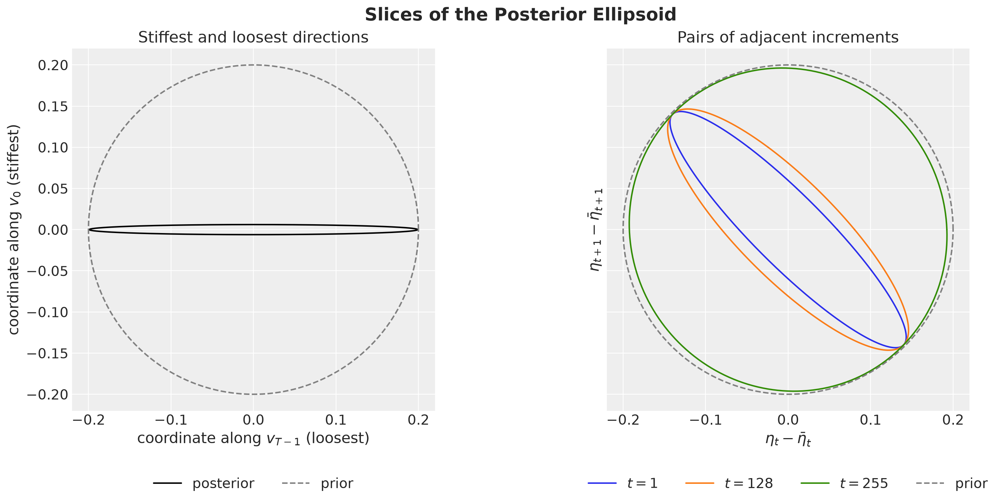
The two panels show slices of the same posterior through different planes.
Along the principal directions the ellipse is a thin sliver. Along adjacent increments it is tilted, and the tilt fades toward the end of the series.
Observe that the axes of the tilted ellipses are diagonals and not coordinate axes. In the full posterior each stiff direction mixes all the increments, not only two of them. This is the cause of the problem: a mean-field guide works coordinate by coordinate.
Orthonormal Time Transforms
The idea of the reparameterization is to rotate the coordinates such that the axes of the ellipsoid become coordinate axes, at least approximately.
Let \(U\) be a \(T \times T\) orthonormal matrix, that is \(U U^\top = I\), and define the new latent variable \(z = U \eta\). We sample \(z\) and we recover the increments as \(\eta = U^\top z\). Three properties make this change of variables convenient:
The density does not change. The density of \(z\) is the density of \(\eta\) evaluated at \(U^\top z\), times \(|\det U^\top| = 1\). There is no Jacobian term, and the model is unchanged.
White noise stays white noise. If the increments \(\eta_t\) are independent \(\text{Normal}(0, \sigma_\eta)\) variables, then the coefficients \(z_k\) are independent \(\text{Normal}(0, \sigma_\eta)\) variables too. The prior keeps its simple form.
The precision is rotated. The posterior precision of \(z\) is \(\Lambda_U = U \Lambda U^\top\).
A rotation does not change methods that treat all directions alike. For example, a full-rank Gaussian guide reaches the same ELBO in every orthonormal basis. The rotation matters for methods that work coordinate by coordinate, such as a mean-field guide.
The best choice of \(U\) is the matrix of eigenvectors of \(\Lambda\), which makes \(\Lambda_U\) diagonal. For the local level model these eigenvectors do not depend on the scales, because \(\Lambda = \sigma_\eta^{-2} I + \sigma_\varepsilon^{-2} L^\top L\) and a multiple of the identity does not change the eigenvectors. In a real model we do not know the eigenvectors: the likelihood is not Gaussian, and other parameters, such as an intercept or a regression, couple with the path.
For a random walk we do know that the stiff directions are smooth and that the loose ones oscillate. Therefore we use a fixed basis that sorts the coordinates from coarse to fine. Pyro offers two, and the first one resembles the stiffest directions of the previous section.
Discrete Cosine Transform
The rows of the orthonormal DCT are cosines of increasing frequency. For \(k = 0, \ldots, T - 1\) and \(t = 1, \ldots, T\),
\[C_{k t} = c_k \cos\left(\frac{\pi k (2t - 1)}{2T}\right), \qquad c_0 = \sqrt{1 / T}, \qquad c_k = \sqrt{2 / T} \ \text{ for } k \ge 1 .\]
The first coefficient \(z_0\) is the average increment times \(\sqrt{T}\). The next ones are slow trends, and the last ones are step-to-step oscillations. The transform costs \(O(T \log T)\) operations with a fast Fourier transform.
Haar Transform
The Haar transform compares the averages of neighboring blocks at different scales. For \(T = 2^n\) the first row is constant, \(H_{0 t} = \sqrt{1 / T}\).
For each scale \(j = 0, \ldots, n - 1\) we split the time axis into \(2^j\) blocks of length \(T / 2^j\), and each block gives one row. That row is \(\sqrt{2^j / T}\) on the first half of the block, \(-\sqrt{2^j / T}\) on the second half, and \(0\) outside the block.
In other words, a Haar coefficient is proportional to the difference between the averages of the two halves of a block. The rows are localized in time, which the cosines are not. The transform costs \(O(T)\) operations.
Remark (other lengths and constrained sites): When \(T\) is not a power of two, NumPyro uses a block-structured version of the same idea, and the first row is no longer a global average. For \(T = 417\), for example, it is proportional to the average of the first \(256\) values. For a constrained latent variable, NumPyro applies the rotation in the unconstrained space.
From now on we label the three coordinate systems none (the original increments), haar and dct. The figures use these labels and one color per coordinate system.
Let’s build the two matrices from the NumPyro transforms. We apply each transform to the columns of the identity matrix, and we check that the result is orthonormal and that the DCT matches the formula.
def transform_matrix(transform: Transform, t_obs: int) -> Float[Array, "t t"]:
"Matrix `u` of a linear transform, such that `u @ x == transform(x)`."
return jax.vmap(transform)(jnp.eye(t_obs)).T
class Coordinates(StrEnum):
"The three coordinate systems of the latent path."
NONE = "none"
HAAR = "haar"
DCT = "dct"
# One color per coordinate system, used in every figure.
COLORS = {Coordinates.NONE: "C0", Coordinates.HAAR: "C1", Coordinates.DCT: "C2"}
rotations = {
Coordinates.NONE: jnp.eye(T_TOY),
Coordinates.HAAR: transform_matrix(HaarTransform(dim=-1), T_TOY),
Coordinates.DCT: transform_matrix(DiscreteCosineTransform(dim=-1), T_TOY),
}
for rotation in rotations.values():
np.testing.assert_allclose(rotation @ rotation.T, jnp.eye(T_TOY), atol=1e-10)
frequency = jnp.arange(T_TOY)
dct_scale = jnp.where(frequency == 0, jnp.sqrt(1 / T_TOY), jnp.sqrt(2 / T_TOY))
dct_formula = dct_scale[:, None] * jnp.cos(
jnp.pi * jnp.outer(frequency, 2 * toy_time - 1) / (2 * T_TOY)
)
np.testing.assert_allclose(rotations[Coordinates.DCT], dct_formula, atol=1e-10)Both matrices are orthonormal. We plot the first four rows of each basis next to the four stiffest directions of the posterior. Each vector has its own horizontal strip, and each strip is scaled to the same height.
panels = {
"Stiffest directions of the posterior": (eigenvectors.T, "black"),
"Discrete cosine transform": (rotations[Coordinates.DCT], COLORS[Coordinates.DCT]),
"Haar transform": (rotations[Coordinates.HAAR], COLORS[Coordinates.HAAR]),
}
fig, axes = plt.subplots(nrows=1, ncols=3, figsize=(16, 5), sharey=True)
for ax, (title, (rows, color)) in zip(axes, panels.items(), strict=True):
for i in range(4):
strip = 0.4 * rows[i] / jnp.abs(rows[i]).max() - i
ax.axhline(-i, color="gray", linewidth=0.5)
ax.plot(toy_time, strip, color=color, drawstyle="steps-mid")
ax.set(xlabel="time step", title=title, yticks=[0, -1, -2, -3])
ax.set_yticklabels([f"vector {i}" for i in range(4)])
axes[0].set(ylabel="basis vector (rescaled)")
fig.suptitle("The First Four Vectors of Each Basis", fontsize=18, fontweight="bold");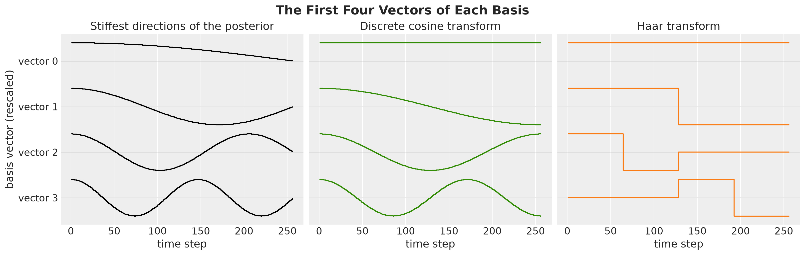
Each strip is one basis vector as a function of time, and the thin gray line is zero. The left panel is the target, and the other two are the fixed bases.
The DCT rows resemble the stiffest directions of the posterior. They are cosines of increasing frequency, which is what the eigenvectors \(v_k\) look like, but the two are not identical: the eigenvectors go to zero at the right end and the DCT rows do not. The next section measures how much this difference costs.
The Haar rows are a blocky version of the same idea. Vector \(0\) is the average, vector \(1\) compares the two halves, and vectors \(2\) and \(3\) compare the quarters inside each half. Both bases sort the coordinates from coarse to fine: the first coordinates are the smooth, stiff directions and the last ones are the oscillating, loose directions.
Mean-Field Gap
Now we quantify what a mean-field guide loses in each basis. First, let’s recall what SVI optimizes. For a detailed introduction see PyData Berlin 2025: Introduction to Stochastic Variational Inference with NumPyro.
Variational inference replaces the posterior \(\text{P}(z \mid y)\) with the closest member \(q\) of a simpler family of distributions, the guide. The discrepancy is the Kullback-Leibler (KL) divergence
\[\text{KL}\left(q \,\|\, \text{P}(z \mid y)\right) = \text{E}_{q}\left[\log q(z) - \log \text{P}(z \mid y)\right] ,\]
which is never negative and is zero only when \(q\) equals the posterior. With the natural logarithm we measure it in nats. The expectation is under \(q\), so the guide pays a large penalty where it puts mass and the posterior does not. A guide that cannot match the shape of the posterior therefore stays inside its high-probability region, and it underestimates the uncertainty of each coordinate. A sum of coordinates, such as the level, can still come out too wide, because the guide also drops the negative correlations. We see both effects below.
We cannot compute the KL divergence directly, because the posterior contains the unknown evidence \(\text{P}(y)\). SVI maximizes the evidence lower bound (ELBO) instead, which only needs the joint density \(\text{P}(y, z)\) of the model:
\[\text{ELBO}(q) = \text{E}_{q}\left[\log \text{P}(y, z) - \log q(z)\right] = \log \text{P}(y) - \text{KL}\left(q \,\|\, \text{P}(z \mid y)\right) .\]
The log evidence does not depend on \(q\), so maximizing the ELBO is the same as minimizing the KL divergence.
A mean-field Gaussian guide for \(z\) is a product of independent Normal distributions,
\[q(z) = \prod_{i = 1}^{T} \text{Normal}(z_i \mid m_i, s_i),\]
with one location \(m_i\) and one scale \(s_i\) per coordinate. This is the family that AutoNormal fits.
The log evidence does not depend on the basis either. Therefore the smallest KL divergence that a mean-field guide can reach in a basis sets its best possible ELBO there. We call that divergence the mean-field gap.
For a Gaussian posterior with precision \(\Lambda_U\) we can minimize in closed form. The optimal locations are the entries of the posterior mean and the optimal scales are \(s_i^2 = 1 / (\Lambda_U)_{ii}\). In other words, each factor of the guide gets the conditional variance of its coordinate, which is never larger than the marginal variance (see equation (10.12) in Section 10.1.2 of Bishop (2006)).
Let \(\tilde{\Lambda}_U\) be the precision \(\Lambda_U\) rescaled to have ones on the diagonal, which we call the normalized precision. The gap is
\[\text{gap}(U) = \frac{1}{2} \left( \sum_{i = 1}^{T} \log (\Lambda_U)_{ii} - \log \det \Lambda \right) = - \frac{1}{2} \log \det \tilde{\Lambda}_U .\]
Here is where the formula comes from. The guide and the posterior are both Gaussian, so their KL divergence has a closed form (see the Wikipedia article on the multivariate normal distribution), which we write out in the Mean-Field Check section below. In that expression the locations only appear in a quadratic term, which is zero at the posterior mean, and the variances separate into one term \((\Lambda_U)_{ii}\, s_i^2 - \log s_i^2\) per coordinate.
Each of these terms is smallest at \(s_i^2 = 1 / (\Lambda_U)_{ii}\), where it equals \(1 + \log (\Lambda_U)_{ii}\). Summing over the coordinates and putting the sum back into the KL formula gives \(\text{gap}(U)\).
We make two remarks:
The gap is zero only for a diagonal precision. This is Hadamard’s inequality: the determinant of a positive definite matrix is at most the product of its diagonal entries, with equality only for a diagonal matrix.
Only the first term depends on the basis. The determinant of \(\Lambda\) is invariant under rotations. A good basis is one where the product of the diagonal entries of \(\Lambda_U\) is small, that is, where the off-diagonal entries of the normalized precision are close to zero.
Let’s compute the gap for the three coordinate systems. We plot the normalized precision matrices (top row) and a zoom on their first \(16\) coordinates (bottom row). White is zero, which means no coupling, and the diagonal is \(1\) by construction.
def normalize(matrix: Float[Array, "t t"]) -> Float[Array, "t t"]:
"Rescale a positive definite matrix to have ones on the diagonal."
scale = jnp.sqrt(jnp.diag(matrix))
return matrix / jnp.outer(scale, scale)
def mean_field_gap(
precision: Float[Array, "t t"], rotation: Float[Array, "t t"]
) -> Float[Array, ""]:
"KL divergence of the best mean-field Gaussian relative to the posterior, in nats."
rotated = rotation @ precision @ rotation.T
return 0.5 * (jnp.log(jnp.diag(rotated)).sum() - jnp.linalg.slogdet(precision)[1])
gaps = {name: mean_field_gap(precision, u) for name, u in rotations.items()}
# In the eigenbasis the precision is diagonal and the gap is zero.
np.testing.assert_allclose(mean_field_gap(precision, eigenvectors.T), 0, atol=1e-8)
fig, axes = plt.subplots(nrows=2, ncols=3, figsize=(16, 10.5))
for column, (name, u) in enumerate(rotations.items()):
normalized = normalize(u @ precision @ u.T)
for row, size in enumerate([T_TOY, 16]):
ax = axes[row, column]
image = ax.imshow(normalized[:size, :size], cmap="RdBu_r", vmin=-1, vmax=1)
ax.grid(visible=False)
ax.set(xlabel="coordinate", ylabel="coordinate")
axes[0, column].set(title=f"{name}: gap = {float(gaps[name]):.1f} nats")
axes[1, column].set(title=f"{name}: first 16 coordinates")
fig.colorbar(image, ax=axes, shrink=0.6, label="normalized precision")
fig.suptitle(
"Normalized Posterior Precision in the Three Coordinate Systems",
fontsize=18,
fontweight="bold",
);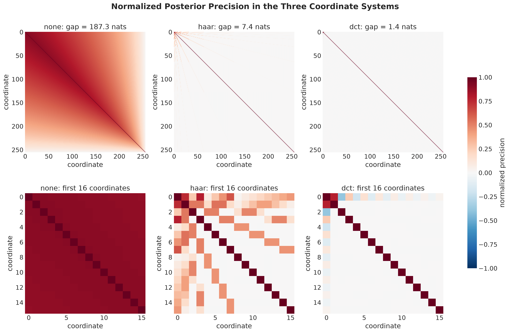
Each column is the same posterior in one coordinate system, and the title gives the mean-field gap.
In the original coordinates every pair is coupled. The matrix is dense, and the gap is \(187.3\) nats, so a mean-field guide is very far from this posterior. The Haar basis leaves few entries, and the gap drops to \(7.4\) nats.
The DCT leaves even fewer, with a gap of \(1.4\) nats, which is less than \(1\%\) of the original gap. The eigenbasis has zero gap, and the DCT is \(1.4\) nats away from it without any knowledge of the scales.
The entries that remain are large. The zoom shows entries up to about \(0.8\) among the coarsest coefficients. For the DCT they are all in the first row: the coefficient \(z_0\), the average increment, is still coupled to the others. A small gap does not mean that every coordinate is well approximated. We see the consequence for the level below.
Next, we check that this result is not specific to the scale ratio \(\rho = \sigma_\eta / \sigma_\varepsilon = 0.2\) of our example. We compute the gap on a grid of scale ratios.
ratio_grid = jnp.logspace(-2, jnp.log10(3.0), 26)
def gap_by_ratio(rotation: Float[Array, "t t"]) -> Float[Array, " r"]:
"Mean-field gap in a coordinate system, on the grid of scale ratios."
return jax.vmap(
lambda rho: mean_field_gap(posterior_precision(T_TOY, rho, 1.0), rotation)
)(ratio_grid)
gap_grid = {name: gap_by_ratio(u) for name, u in rotations.items()}
fig, ax = plt.subplots()
for name, values in gap_grid.items():
ax.plot(ratio_grid, values, color=COLORS[name], label=name)
ax.axvline(
DRIFT_SCALE / SIGMA,
color="black",
linestyle=":",
label="$\\rho = 0.2$ (our example)",
)
ax.set(
xscale="log",
yscale="log",
xlabel="scale ratio $\\rho = \\sigma_\\eta / \\sigma_\\varepsilon$ (log scale)",
ylabel="mean-field gap (nats, log scale)",
)
ax.legend(loc="upper center", bbox_to_anchor=(0.5, -0.12), ncol=4)
fig.suptitle("Mean-Field Gap by Coordinate System", fontsize=18, fontweight="bold");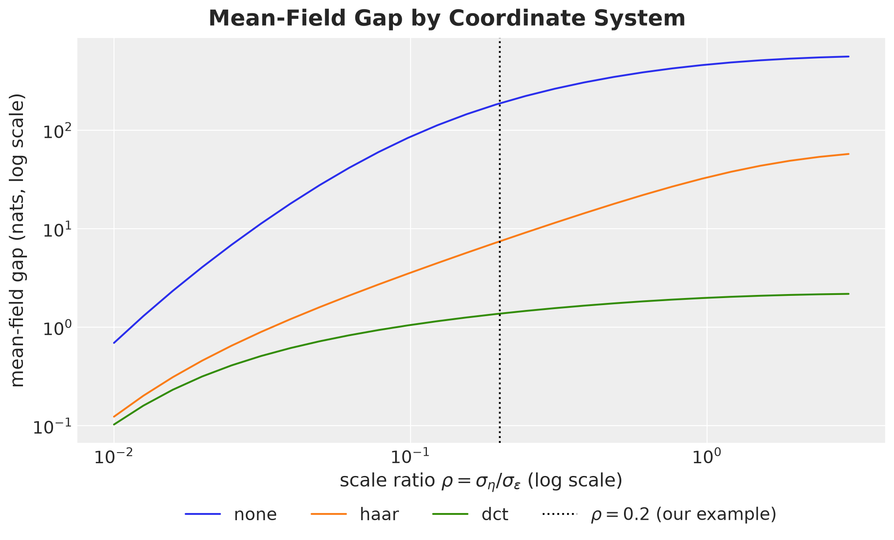
The figure shows the gap of the best mean-field guide as a function of the scale ratio, on logarithmic axes.
The ranking is the same for every \(\rho\): the original coordinates are the worst, and both rotations help. The gain grows with the scale ratio. For a very small \(\rho\) the posterior is close to the prior and every coordinate system is fine, while for \(\rho \ge 0.1\) the original gap is in the tens or hundreds of nats and the DCT gap stays below \(3\) nats.
The DCT has a smaller gap than Haar for this model, because its rows are closer to the stiffest directions of the posterior.
Uncertainty of the Level
Next, we look at what the gap means for the level, the quantity we forecast from. The best mean-field guide has covariance \(U^\top \text{diag}(1 / (\Lambda_U)_{ii})\, U\) for the increments. We push it through the cumulative sum and compare the standard deviation of the level with the exact one.
def mean_field_covariance(
precision: Float[Array, "t t"], rotation: Float[Array, "t t"]
) -> Float[Array, "t t"]:
"Covariance of the increments under the best mean-field Gaussian."
rotated = rotation @ precision @ rotation.T
return rotation.T @ jnp.diag(1 / jnp.diag(rotated)) @ rotation
mean_field_level_sd = {
name: jnp.sqrt(
jnp.diag(cumsum_matrix @ mean_field_covariance(precision, u) @ cumsum_matrix.T)
)
for name, u in rotations.items()
}
fig, ax = plt.subplots()
for name, values in mean_field_level_sd.items():
ax.plot(toy_time, values, color=COLORS[name], label=f"mean-field: {name}")
ax.plot(toy_time, level_sd, color="black", linestyle="--", linewidth=2, label="exact")
ax.set(
yscale="log",
xlabel="time step",
ylabel="posterior standard deviation of the level (log scale)",
)
ax.legend(loc="upper center", bbox_to_anchor=(0.5, -0.12), ncol=4)
fig.suptitle(
"Uncertainty of the Level under a Mean-Field Guide", fontsize=18, fontweight="bold"
);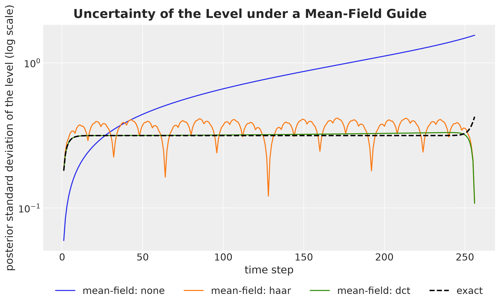
The dashed black line is the exact posterior standard deviation of the level. The colored lines are the standard deviations under the best mean-field guide in each coordinate system.
In the original coordinates the shape is wrong. The guide treats the increments as independent, so their variances add up along the series: the level is too narrow at the start and too wide after that, up to \(4.5\) times near the end. The exact posterior is flat away from the ends.
The DCT guide is within \(5\%\) of the exact value, except in the last \(6\) time steps, where it is too narrow, at the last one by a factor of \(3.9\). The Haar guide is about \(13\%\) too wide on average, with dips at the ends of the Haar blocks, the deepest at \(t = 128\), \(64\) and \(192\). The deepest dip of all is at the last time step, with the same value as the DCT.
The collapse at the end and the Haar dips have the same cause. In both bases every row except the first sums to zero, so the last level, the sum of all the increments, is \(\sqrt{T}\) times the first coefficient \(z_0\).
The guide gives \(z_0\) its conditional variance, which is too small because \(z_0\) is strongly coupled to the other coarse coefficients. The same happens at the end of every Haar block, where only the coarse coefficients enter the level.
Between the block ends the finer Haar coefficients enter as well, and the guide drops their negative correlations with the coarse ones, so the level comes out too wide. These dips are a property of the Haar basis under a mean-field guide. They do not depend on the data, because the precision does not depend on the data.
The last time step matters, because a forecast starts from the last level, the forecast origin. There the rotated guides are as wrong as the original one, in the opposite direction. The rotation improves the fit as a whole, but it does not fix the uncertainty at the forecast origin.
Unknown Scales
With fixed scales, a bad coordinate system gives a wrong uncertainty. When the scales are parameters, the optimizer has a second option: it can change the scales to make the bound tighter. Turner and Sahani (2011) study this bias of variational methods in time series models.
We can compute this effect exactly for point estimates of the scales. The best ELBO as a function of the scales is the log marginal likelihood minus the gap,
\[\log \text{P}(y \mid \sigma_\eta, \sigma_\varepsilon) - \text{gap}_U(\sigma_\eta, \sigma_\varepsilon) ,\]
and the gap grows with \(\rho\). The gap therefore acts as a penalty on \(\sigma_\eta / \sigma_\varepsilon\). Let’s maximize this function in each coordinate system and compare the result with the maximum of the marginal likelihood alone.
The marginal likelihood has a closed form because the model is linear and Gaussian. With the increments integrated out, \(y = L \eta + \varepsilon\) is a multivariate Gaussian with mean zero and covariance \(\sigma_\eta^2 L L^\top + \sigma_\varepsilon^2 I\) (see equation (2.30) of Rasmussen and Williams (2006)). The function log_marginal_likelihood evaluates its log density at toy_y, and best_scales maximizes the objective above over the two scales with scipy.optimize.minimize.
def log_marginal_likelihood(
drift_scale: ScalarLike, sigma: ScalarLike
) -> Float[Array, ""]:
"""Log marginal likelihood of the simulated observations given the two scales.
With the increments integrated out, `y = L eta + eps` is Gaussian with mean zero
and covariance `drift_scale**2 * L @ L.T + sigma**2 * I`, where `L` is the
cumulative-sum matrix. We return the log density of that Gaussian at `toy_y`
(Rasmussen and Williams, 2006, equation 2.30): minus one half of the quadratic
form, the log determinant and the `T log(2 pi)` constant.
"""
y_covariance = drift_scale**2 * cumsum_matrix @ cumsum_matrix.T
y_covariance += sigma**2 * jnp.eye(T_TOY)
quadratic = toy_y @ jnp.linalg.solve(y_covariance, toy_y)
log_det = jnp.linalg.slogdet(y_covariance)[1]
return -0.5 * (T_TOY * jnp.log(2 * jnp.pi) + log_det + quadratic)
def best_scales(rotation: Float[Array, "t t"] | None) -> Float[Array, " 2"]:
"""Point estimates of `(drift_scale, sigma)` that maximize an objective.
With `rotation=None` the objective is the log marginal likelihood, which is the
answer without any approximation of the posterior. With a rotation `U` it is the
best ELBO that a mean-field guide can reach in that basis: the log marginal
likelihood minus the mean-field gap of the posterior precision `Lambda_U`, which
depends on the scales through `posterior_precision`. We optimize over the log
scales with Nelder-Mead, starting at the values used to simulate the data.
"""
def objective(log_scales: Float[np.ndarray, " 2"]) -> float:
"Negative objective at the log scales, for `scipy.optimize.minimize`."
drift_scale, sigma = jnp.exp(jnp.asarray(log_scales))
value = log_marginal_likelihood(drift_scale, sigma)
if rotation is not None:
value -= mean_field_gap(
posterior_precision(T_TOY, drift_scale, sigma), rotation
)
return -float(value)
result = minimize(objective, np.log([DRIFT_SCALE, SIGMA]), method="Nelder-Mead")
return jnp.exp(result.x)
scale_estimates = {"marginal likelihood": best_scales(None)} | {
name: best_scales(u) for name, u in rotations.items()
}
objective_labels = ["marginal\nlikelihood"] + [
f"best ELBO\n{name}" for name in Coordinates
]
fig, axes = plt.subplots(nrows=1, ncols=2, figsize=(15, 5.5))
for i, (ax, symbol, truth) in enumerate(
zip(
axes,
["\\sigma_\\eta", "\\sigma_\\varepsilon"],
[DRIFT_SCALE, SIGMA],
strict=True,
)
):
estimates = [float(estimate[i]) for estimate in scale_estimates.values()]
ax.bar(
range(len(scale_estimates)),
estimates,
color=["black", *COLORS.values()],
alpha=0.8,
)
ax.axhline(truth, color="gray", linestyle="--", label="value used to simulate")
ax.set_xticks(range(len(scale_estimates)), labels=objective_labels)
ax.set(
xlabel="objective",
ylabel=f"estimate of ${symbol}$",
title=f"Estimate of ${symbol}$",
ylim=(0, 1.15 * max(estimates)),
)
ax.legend(loc="upper left")
fig.suptitle(
"Scale Estimates under a Mean-Field Guide", fontsize=18, fontweight="bold"
);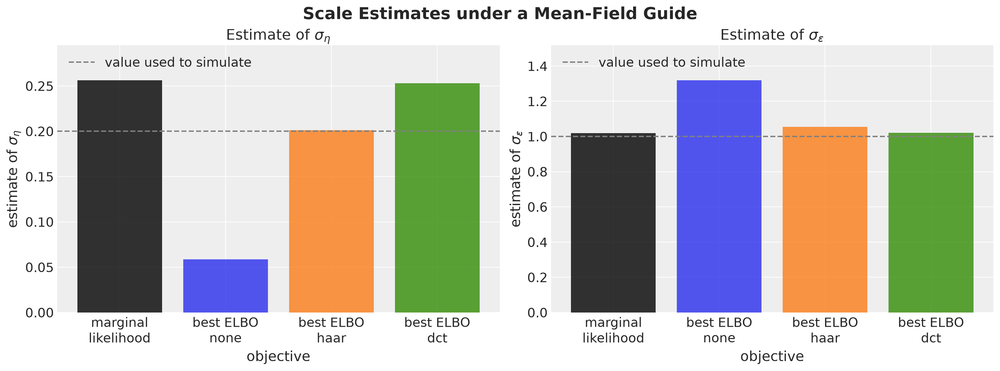
The black bar maximizes the marginal likelihood, which is the answer without any approximation of the posterior. The colored bars maximize the best ELBO of a mean-field guide in each coordinate system. The dashed line is the value we used to simulate the data.
In the original coordinates the level is shrunk. Compared with the maximum of the marginal likelihood, the estimate of \(\sigma_\eta\) is about four times too small, and the estimate of \(\sigma_\varepsilon\) is about \(30\%\) too large. The guide prefers a level that moves less, and it explains the rest as noise.
The rotations remove most of this bias. With the Haar basis \(\sigma_\eta\) is about \(20\%\) too small, and with the DCT both estimates are within \(2\%\) of the marginal likelihood. We will see the same pattern in the ridership example.
Remark (other guides): A full-rank Gaussian guide removes the dependence on the basis, at the price of \(O(T^2)\) parameters. Low-rank guides are in between. The rotation has no parameters and costs \(O(T \log T)\) operations or less.
Local Level Experiments
We now check the derivation of the mean-field gap on the local level model with a fitted guide.
First, we need the model in the three coordinate systems. NumPyro implements the two rotations as the reparameterizers HaarReparam and DiscreteCosineReparam (see the NumPyro documentation). The effect handler handlers.reparam applies a reparameterizer to the sites we name, without changes to the model code.
The reparameterizer replaces the latent site drift with a new latent site, drift_haar or drift_dct, which holds the coefficients \(z = U \eta\). The site drift becomes a deterministic function of the new site. Let’s create the three versions of the conditioned model.
Model = Callable[..., None]
toy_models: dict[Coordinates, Model] = {
Coordinates.NONE: toy_model,
Coordinates.HAAR: handlers.reparam(
toy_model, config={"drift": HaarReparam(dim=-1)}
),
Coordinates.DCT: handlers.reparam(
toy_model, config={"drift": DiscreteCosineReparam(dim=-1)}
),
}Let’s check that the three versions define the same model: we evaluate the log joint density of the three models at the same point, written in each coordinate system.
log_joint, _ = log_density(toy_model, toy_args, {}, {"drift": toy_drift})
for name, transform in {
Coordinates.HAAR: HaarTransform(dim=-1),
Coordinates.DCT: DiscreteCosineTransform(dim=-1),
}.items():
log_joint_rotated, _ = log_density(
toy_models[name],
toy_args,
{},
{f"drift_{name}": transform(toy_drift)},
)
np.testing.assert_allclose(log_joint_rotated, log_joint, rtol=1e-5)The three log densities agree. We have three coordinate systems for one model.
Mean-Field Check
We fit an AutoNormal guide to each version of the model. The guide is a product of Normal distributions with locations \(m\) and scales \(s\), and the posterior of \(z\) is a Gaussian with mean \(U \bar{\eta}\) and precision \(\Lambda_U\). The KL divergence between two Gaussians has a closed form (see the Wikipedia article on the multivariate normal distribution), and for this pair it is
\[\text{KL} = \frac{1}{2} \left( \sum_{i} (\Lambda_U)_{ii}\, s_i^2 + (m - U \bar{\eta})^\top \Lambda_U\, (m - U \bar{\eta}) - T - \log \det \Lambda - \sum_{i} \log s_i^2 \right) .\]
This number cannot be smaller than the gap of the previous section, and it is equal to it only if the optimizer finds the optimum. We use a step size that decays from \(0.02\) to \(10^{-4}\), so that the optimizer noise does not hide gaps of a few nats.
def fit_toy_guide(
rng_key: UInt[Array, "2"], model: Model, num_steps: int = 20_000
) -> dict[str, Array]:
"Fit a mean-field guide to the local level model and return its parameters."
guide = AutoNormal(model)
optimizer = Adam(exponential_decay(0.02, num_steps, 0.005))
svi = SVI(model, guide, optimizer, Trace_ELBO(num_particles=4))
result = svi.run(rng_key, num_steps, *toy_args, progress_bar=False)
return result.params
def fitted_gap(
params: dict[str, Array], site: str, rotation: Float[Array, "t t"]
) -> Float[Array, ""]:
"KL divergence of a fitted mean-field guide relative to the exact posterior."
loc = params[f"{site}_auto_loc"]
scale = params[f"{site}_auto_scale"]
rotated = rotation @ precision @ rotation.T
shift = loc - rotation @ drift_mean
return 0.5 * (
(jnp.diag(rotated) * scale**2).sum()
+ shift @ rotated @ shift
- T_TOY
- jnp.linalg.slogdet(precision)[1]
- 2 * jnp.log(scale).sum()
)
toy_sites = {
Coordinates.NONE: "drift",
Coordinates.HAAR: "drift_haar",
Coordinates.DCT: "drift_dct",
}
rng_key, rng_subkey = random.split(rng_key)
fitted_gaps = {
name: fitted_gap(fit_toy_guide(rng_subkey, model), toy_sites[name], rotations[name])
for name, model in toy_models.items()
}We compare the gap of the fitted guides with the gap from the formula.
positions = jnp.arange(len(Coordinates))
formula_gaps = [float(gaps[name]) for name in Coordinates]
fitted = [float(fitted_gaps[name]) for name in Coordinates]
fig, ax = plt.subplots()
for position, name in enumerate(Coordinates):
ax.plot(
position - 0.1, formula_gaps[position], "o", color=COLORS[name], markersize=12
)
ax.plot(position + 0.1, fitted[position], "X", color=COLORS[name], markersize=12)
ax.plot([], [], "o", color="gray", markersize=12, label="formula")
ax.plot([], [], "X", color="gray", markersize=12, label="fitted guide")
for position, formula_gap, fitted_value in zip(
positions, formula_gaps, fitted, strict=True
):
ax.annotate(
f"{formula_gap:.2f}",
(position - 0.1, formula_gap),
xytext=(-45, 0),
textcoords="offset points",
va="center",
)
ax.annotate(
f"{fitted_value:.2f}",
(position + 0.1, fitted_value),
xytext=(12, 0),
textcoords="offset points",
va="center",
)
ax.set(
yscale="log",
xticks=positions,
xticklabels=list(Coordinates),
xlim=(-0.6, 2.6),
xlabel="coordinate system",
ylabel="mean-field gap (nats, log scale)",
)
ax.legend(loc="upper center", bbox_to_anchor=(0.5, -0.12), ncol=2)
fig.suptitle(
"Mean-Field Gap: Formula and Fitted Guide", fontsize=18, fontweight="bold"
);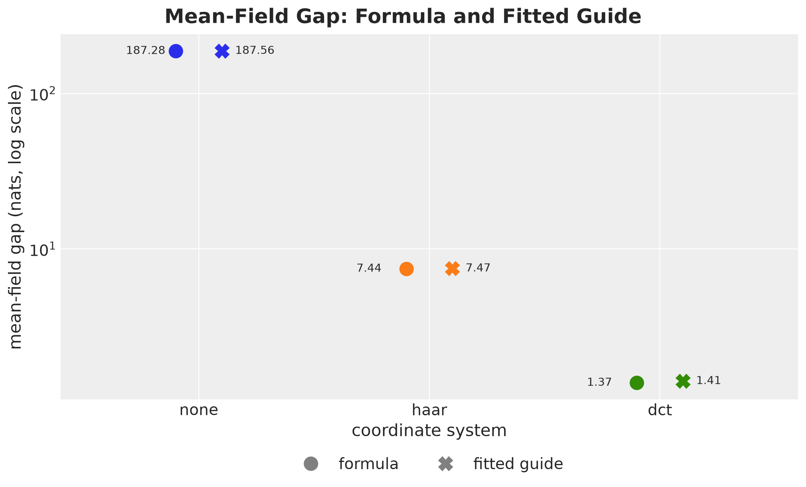
For each coordinate system, the circle is the gap from the formula and the cross is the divergence of the fitted guide.
The two values agree in the three coordinate systems, and the fitted value is never below the formula. The rotation improves the ELBO by \(180\) nats with the Haar basis and by \(186\) nats with the DCT, with the same model, guide family and optimizer in the three fits.
Ridership Forecasting Model
Now we move to real data and to a model without a closed-form posterior. We use the example of the Pyro tutorial Forecasting I: univariate, heavy tailed, in the numpyro_forecast version of the univariate forecasting example.
Data
The data are the total weekly ridership of the BART train system, on the log scale. We hold out the last \(52\) weeks as a test set. The seasonal features are a Fourier basis with \(26\) harmonics of the yearly period.
We load the data, split it, and plot it.
data = load_bart_weekly()
duration = data.shape[0]
t_train = duration - 52
y_train = data[:t_train]
y_test = data[t_train:]
covariates = fourier_features(duration, period=365.25 / 7, num_terms=26)
covariates_train = covariates[:t_train]
weeks = jnp.arange(duration)
weeks_train = weeks[:t_train]
weeks_test = weeks[t_train:]
fig, ax = plt.subplots()
ax.plot(weeks_train, y_train[:, 0], color="black", label="train")
ax.plot(weeks_test, y_test[:, 0], color="C3", label="test")
ax.axvline(t_train, color="gray", linestyle="--", label="train-test split")
ax.set(xlabel="week", ylabel="log(rides)")
ax.legend(loc="upper center", bbox_to_anchor=(0.5, -0.12), ncol=3)
fig.suptitle("Weekly BART Ridership", fontsize=18, fontweight="bold");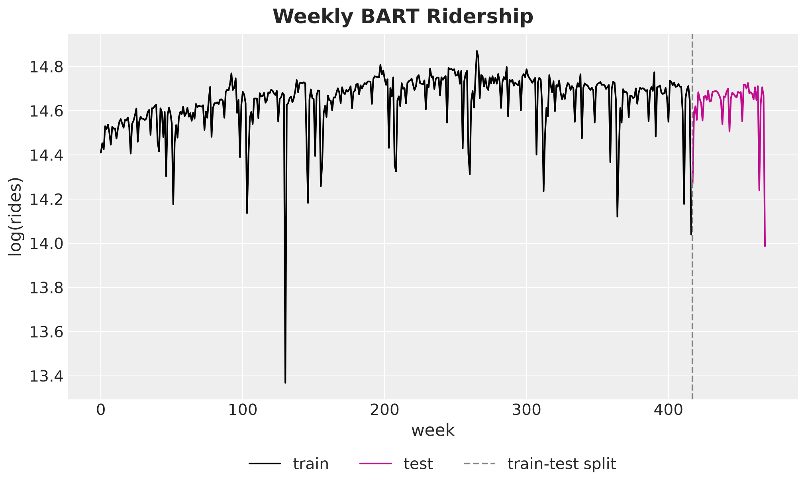
The series has \(417\) training weeks and \(52\) test weeks.
The level moves slowly: there is a trend that changes over the years, which is what the random-walk level has to capture. There is also a yearly pattern with sharp drops in the holiday weeks, which is the reason for a heavy-tailed likelihood.
Model Specification
The model is a local level with a seasonal regression and Student-T noise. We keep the notation of the first part. Let \(x_t\) be the vector of Fourier features of week \(t\), \(w\) the regression weights, \(b\) a global intercept, and \(\nu\) the degrees of freedom. The model is
\[\begin{align*} y_t & = b + \mu_t + w^\top x_t + \varepsilon_t, & \varepsilon_t & \sim \text{StudentT}(\nu, 0, \sigma_\varepsilon), \\ \mu_t & = \mu_{t-1} + \eta_t, & \eta_t & \sim \text{Normal}(0, \sigma_\eta), \end{align*}\]
with \(\mu_0 = 0\). This is the local level model of the first part with three complications: the scales \(\sigma_\eta\) and \(\sigma_\varepsilon\) are unknown, the likelihood is not Gaussian, and there are an intercept and a regression.
We keep the priors and the site names of the Pyro tutorial: bias is \(b\), weight is \(w\), drift_scale is \(\sigma_\eta\), sigma is \(\sigma_\varepsilon\) and nu is \(\nu\). The model follows the numpyro_forecast convention: it takes (covariates, data), derives the forecast horizon with Horizon.from_data, samples the increments with innovations, and hands the prediction to predict. We also register the level \(\mu_t\) as the deterministic site level, to compare it across fits.
We sample the increments in the non-centered parameterization, \(\eta_t = \sigma_\eta\, \tilde{\eta}_t\) with \(\tilde{\eta}_t \sim \text{Normal}(0, 1)\), through LocScaleReparam(centered=0.0). This reduces the strong dependence between a scale and the variables it scales, which is known as the funnel (Gorinova, Moore and Hoffman, 2020). It is a different problem from the one we study here.
Remark (the centered site): The documentation example samples the amount of centering as an extra site centered. That site does not change the model, and NUTS does not mix on it (see the comparison of inference methods). We fix it, so that the NUTS reference below converges.
Here is the model.
def ridership_model(
covariates: Float[Array, "duration features"],
data: Float[Array, "t_obs 1"] | None = None,
) -> None:
"Local level with a Fourier regression and Student-T observations."
h = Horizon.from_data(covariates, data)
num_features = covariates.shape[-1]
bias = numpyro.sample("bias", dist.Normal(0.0, 10.0))
weight = numpyro.sample(
"weight", dist.Normal(0.0, 0.1).expand([num_features]).to_event(1)
)
drift_scale = numpyro.sample("drift_scale", dist.LogNormal(-20.0, 5.0))
nu = numpyro.sample("nu", dist.Gamma(10.0, 2.0))
sigma = numpyro.sample("sigma", dist.LogNormal(-5.0, 5.0))
drift = innovations(
h,
"drift",
dist.Normal(0.0, drift_scale),
reparam=LocScaleReparam(centered=0.0),
)
level = numpyro.deterministic("level", jnp.cumsum(drift, axis=-2))
regression = (weight * covariates).sum(axis=-1, keepdims=True)
predict(h, dist.StudentT(df=nu, loc=0.0, scale=sigma), bias + level + regression)
graph = numpyro.render_model(
ridership_model,
model_args=(covariates_train, y_train),
render_distributions=True,
)
graph.attr(label="Original Ridership Model", labelloc="t", fontsize="20")
graph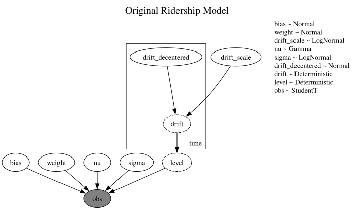
The function time_reparam of numpyro_forecast applies the same reparameterizers to a forecasting model. It selects every latent sample site inside the time plate, which are the sites that innovations samples, and it rotates them along the time axis. The global parameters and the likelihood stay as they are.
Each rotated version of the model is one call to time_reparam. We create each wrapped model once and reuse it for fitting and forecasting.
Remark (Pyro’s names): In Pyro 1.9.2 the two names are swapped in pyro.contrib.forecast.util: time_reparam="haar" applies the DCT and time_reparam="dct" applies the Haar transform. In numpyro_forecast each name does what it says. Take this into account when comparing results across the two libraries.
models: dict[Coordinates, Model] = {
Coordinates.NONE: ridership_model,
Coordinates.HAAR: time_reparam(ridership_model, Coordinates.HAAR),
Coordinates.DCT: time_reparam(ridership_model, Coordinates.DCT),
}Let’s render the DCT version to see which sites it has.
graph = numpyro.render_model(
models[Coordinates.DCT],
model_args=(covariates_train, y_train),
render_distributions=True,
)
graph.attr(label="DCT Version of the Ridership Model", labelloc="t", fontsize="20")
graph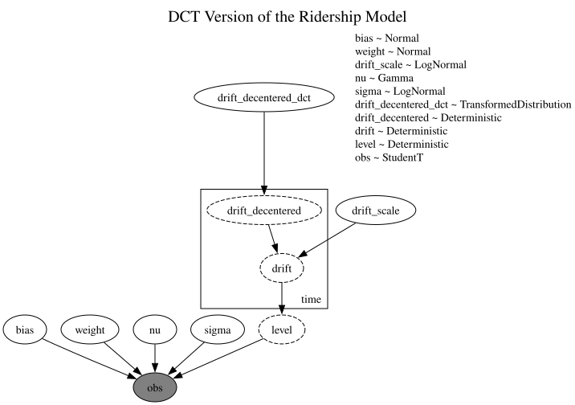
The graph shows the sites of the reparameterized model. Solid ellipses are latent sites, dashed ellipses are deterministic sites, the gray ellipse is the observed site, and the box is the time plate.
The new latent site is drift_decentered_dct. It is outside the time plate, because its \(417\) coordinates are DCT coefficients and not time steps. The sites inside the plate are now deterministic: the model computes both drift_decentered (the standardized increments \(\tilde{\eta}_t\)) and drift from the new site. The global parameters, the level and the likelihood do not change.
Variational Inference
We fit an AutoNormal guide to each version of the model. We take Adam and the \(50000\) steps from the documentation example. The example uses a constant step size of \(0.005\). We let the step size decay from \(0.005\) to \(0.0005\), so that the parameters settle at the end of the run and do not jitter around the optimum. We collect these settings in the SVIConfig tuple below.
The result of one fit depends on the random key, which initializes the guide and draws the ELBO samples. We therefore fit every version of the model \(5\) times, once per random key, which gives \(15\) fits in total. The three coordinate systems share the same five keys, so that we can compare fits that only differ in the rotation.
We also initialize the location of bias at the mean of the training data. The data are close to \(14.6\) on the log scale, and the default initialization draws every location uniformly in \((-2, 2)\). We study the default initialization in the next subsection.
%%time
NUM_FITS = 5
NUM_STEPS = 50_000
# The step size decays from 0.005 to 0.0005 over the run.
step_schedule = exponential_decay(0.005, NUM_STEPS, 0.1)
class SVIConfig(NamedTuple):
"Settings of one SVI run of the ridership model."
init_loc_fn: Callable = init_to_uniform
step_size: float | Callable = step_schedule
num_steps: int = NUM_STEPS
class Fit(NamedTuple):
"Result of one SVI fit."
guide: AutoNormal
params: dict[str, Array]
losses: Float[Array, " steps"]
seconds: float
def fit_guide(
rng_key: UInt[Array, "2"],
model: Model,
config: SVIConfig,
covariates: Float[Array, "t_obs features"],
data: Float[Array, "t_obs 1"],
) -> Fit:
"Fit a mean-field guide to a version of the ridership model."
guide = AutoNormal(model, init_loc_fn=config.init_loc_fn)
svi = SVI(model, guide, Adam(step_size=config.step_size), Trace_ELBO())
start = perf_counter()
result = svi.run(rng_key, config.num_steps, covariates, data, progress_bar=False)
result.losses.block_until_ready()
return Fit(guide, result.params, result.losses, perf_counter() - start)
def fit_all(config: SVIConfig) -> dict[Coordinates, list[Fit]]:
"Fit every version of the model on the training data, once per random key."
return {
name: [
fit_guide(key, model, config, covariates_train, y_train) for key in svi_keys
]
for name, model in models.items()
}
def final_loss(fit: Fit) -> float:
"Average ELBO loss over the last 1000 steps."
return float(fit.losses[-1_000:].mean())
init_bias = init_to_value(values={"bias": y_train.mean()})
svi_config = SVIConfig(init_loc_fn=init_bias)
rng_key, *svi_keys = random.split(rng_key, NUM_FITS + 1)
svi_fits = fit_all(svi_config)CPU times: user 2min 46s, sys: 59.6 s, total: 3min 46s
Wall time: 1min 27sWe plot the ELBO loss (the negative ELBO, in nats, so lower is better) of the first fit in each coordinate system. The loss starts above \(10000\) nats and drops fast in the first \(1000\) steps, so the left panel starts at step \(1000\). The right panel shows the last \(20000\) steps. The legend gives the average loss over the last \(1000\) steps, which we call the final loss.
steps = jnp.arange(NUM_STEPS)
early = (steps >= 1_000) & (steps < 10_000)
late = steps >= NUM_STEPS - 20_000
fig, axes = plt.subplots(nrows=1, ncols=2, figsize=(15, 5))
for name, fits in svi_fits.items():
losses = fits[0].losses
axes[0].plot(
steps[early],
losses[early],
color=COLORS[name],
linewidth=0.5,
alpha=0.7,
label=f"{name} (final loss: {final_loss(fits[0]):.0f})",
)
axes[1].plot(
steps[late], losses[late], color=COLORS[name], linewidth=0.5, alpha=0.7
)
axes[0].set(xlabel="SVI step", ylabel="ELBO loss (nats)", title="Steps 1000 to 10000")
axes[0].legend(loc="upper right")
axes[1].set(xlabel="SVI step", ylabel="ELBO loss (nats)", title="Last 20000 steps")
fig.suptitle("ELBO Loss by Coordinate System", fontsize=18, fontweight="bold");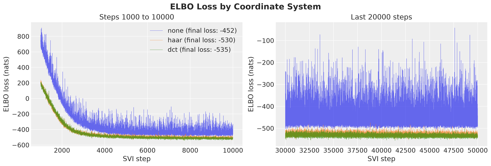
The three curves are the same guide family fitted to the same model, in three coordinate systems.
The rotated fits reach a much better ELBO. The final loss is about \(-452\) in the original coordinates, \(-530\) with the Haar transform and \(-535\) with the DCT, so the gain is about \(78\) nats with Haar and \(83\) nats with the DCT. The rotated fits are also ahead from step \(1000\) on.
The log evidence is the same for the three models, so a better ELBO means a guide that is closer to the posterior 🚀. We look at what this means for the parameters and for the forecasts in the next section.
Observe that the band of the original fit stays wide in the last \(20000\) steps, although the step size decays from \(0.0013\) to \(0.0005\) over these steps. Each point is a single-sample Monte Carlo estimate of the ELBO, and the variance of that estimate is zero when the guide equals the posterior and large when the guide is far from it. The wide band is therefore one more symptom of the problem that the rotation addresses, and a smaller step size does not remove it.
Each step costs more in the rotated coordinates. Let’s time the fits. The first fit of each model includes the compilation, so we show the other four of each coordinate system. The bar is their mean and each black point is one fit.
fit_seconds = pl.DataFrame(
[
{"coordinates": name, "seconds": fit.seconds}
for name, fits in svi_fits.items()
for fit in fits[1:]
]
)
fig, ax = plt.subplots()
sns.barplot(
data=fit_seconds,
x="coordinates",
y="seconds",
hue="coordinates",
palette=COLORS,
alpha=0.7,
errorbar=None,
legend=False,
ax=ax,
)
sns.stripplot(
data=fit_seconds, x="coordinates", y="seconds", color="black", jitter=False, ax=ax
)
ax.plot([], [], "s", color="gray", alpha=0.7, markersize=12, label="mean over the fits")
ax.plot([], [], "o", color="black", label="one fit")
ax.legend(loc="upper left")
ax.set(xlabel="coordinate system", ylabel="seconds per fit (after compilation)")
fig.suptitle("Time of a Fit by Coordinate System", fontsize=18, fontweight="bold");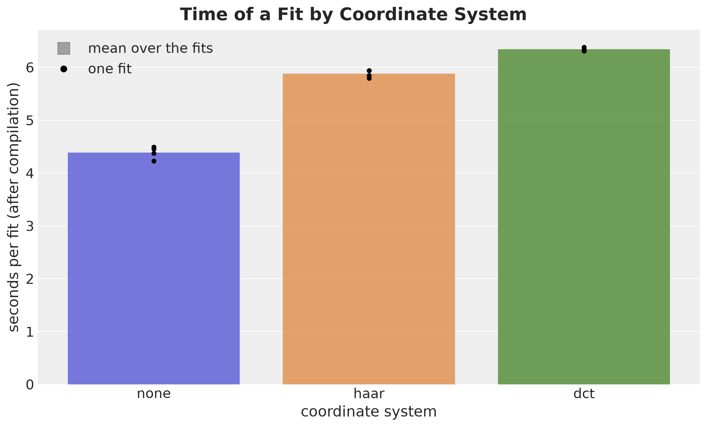
The spread of the points shows how much the time varies between runs.
A fit takes about \(4.4\) seconds in the original coordinates, \(5.9\) with the Haar transform and \(6.3\) with the DCT. A fit in the rotated coordinates takes about two seconds longer and ends about \(80\) nats lower.
Initialization
What happens with the default initialization? We repeat all the fits with init_to_uniform, the default of AutoNormal and of SVIConfig, and the same random keys.
%%time
default_fits = fit_all(SVIConfig())CPU times: user 2min 43s, sys: 1min, total: 3min 44s
Wall time: 1min 22sWe plot the loss curves of the first fit from step \(1000\) on (left), and the final loss of all the fits for the two initializations (right).
after_start = steps >= 1_000
fig, axes = plt.subplots(nrows=1, ncols=2, figsize=(15, 5.5))
for position, name in enumerate(Coordinates):
axes[0].plot(
steps[after_start],
default_fits[name][0].losses[after_start],
color=COLORS[name],
linewidth=0.5,
alpha=0.7,
label=name,
)
axes[1].plot(
[position - 0.12] * len(svi_keys),
[final_loss(fit) for fit in svi_fits[name]],
"o",
color=COLORS[name],
markersize=7,
)
axes[1].plot(
[position + 0.12] * len(svi_keys),
[final_loss(fit) for fit in default_fits[name]],
"X",
color=COLORS[name],
markersize=8,
)
axes[0].set(
xlabel="SVI step",
ylabel="ELBO loss (nats)",
title="Default initialization, first fit",
)
axes[0].legend(loc="upper center", bbox_to_anchor=(0.5, -0.15), ncol=3)
axes[1].set(
xticks=list(range(len(Coordinates))),
xticklabels=list(Coordinates),
xlim=(-0.6, 2.6),
xlabel="coordinate system",
ylabel="final ELBO loss (nats)",
title="Final loss of the five fits",
)
axes[1].plot([], [], "o", color="gray", markersize=7, label="bias initialized")
axes[1].plot([], [], "X", color="gray", markersize=8, label="default")
axes[1].legend(loc="upper center", bbox_to_anchor=(0.5, -0.15), ncol=2)
fig.suptitle(
"ELBO Loss with the Default Initialization", fontsize=18, fontweight="bold"
);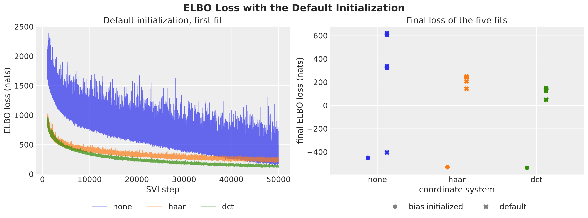
The left panel shows the three loss curves of the first fit with the default initialization. In the right panel each marker is the final loss of one fit: circles for the fits with bias initialized and crosses for the default initialization.
With bias initialized the result does not depend on the random key: the five circles of each coordinate system are within about \(3\) nats of each other. With the default initialization none of the \(15\) fits finishes. The losses are still falling at step \(50000\), and the crosses end far above the circles: between \(50\) and \(1070\) nats above in the original coordinates, between \(670\) and \(780\) nats with Haar, and between \(590\) and \(680\) nats with the DCT.
The slow phase comes from the intercept. The two setups differ in the starting value of bias, which the default initialization draws in \((-2, 2)\) like every other location, while the data are at \(14.6\). Let’s look at where the unfinished fits are. For the first fit of each coordinate system we compare the default initialization with the initialized bias: the difference in the final loss, the difference in the guide median of bias, and the ratio of the guide medians of drift_scale.
def guide_median(fit: Fit, site: str) -> float:
"Guide median of a scalar site of one fit."
return float(fit.guide.median(fit.params)[site])
first_fit_differences = pl.DataFrame(
[
{"coordinates": name, "quantity": quantity, "value": value}
for name in Coordinates
for quantity, value in [
(
"final loss difference (nats)",
final_loss(default_fits[name][0]) - final_loss(svi_fits[name][0]),
),
(
"difference in the median of bias",
guide_median(default_fits[name][0], "bias")
- guide_median(svi_fits[name][0], "bias"),
),
(
"ratio of the medians of drift_scale",
guide_median(default_fits[name][0], "drift_scale")
/ guide_median(svi_fits[name][0], "drift_scale"),
),
]
]
)
fig, axes = plt.subplots(nrows=1, ncols=3, figsize=(16, 5))
for ax, quantity in zip(
axes, first_fit_differences["quantity"].unique(maintain_order=True), strict=True
):
sns.barplot(
data=first_fit_differences.filter(pl.col("quantity") == quantity),
x="coordinates",
y="value",
hue="coordinates",
palette=COLORS,
alpha=0.8,
legend=False,
ax=ax,
)
ax.set(xlabel="coordinate system", ylabel="", title=quantity)
axes[2].axhline(1, color="gray", linestyle="--")
fig.suptitle(
"Default Initialization Relative to the Initialized Bias (First Fit)",
fontsize=18,
fontweight="bold",
);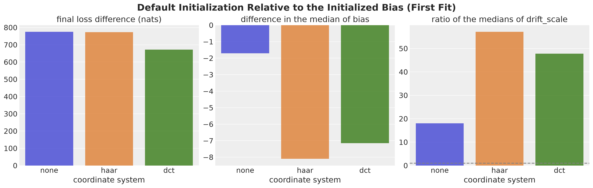
The unfinished fits hold the intercept in the level. In every coordinate system the median of bias is below the median of the fit with bias initialized, by about \(1.7\) in the original coordinates, \(8\) with Haar and \(7\) with the DCT. The median of drift_scale is \(18\) to \(57\) times larger, because the level has to carry the offset.
The final loss is about \(770\) nats above the fit with bias initialized in the original and the Haar coordinates, and about \(670\) nats above with the DCT.
The step size starts at the \(0.005\) of the documentation example. Let’s repeat the fits with the default initialization and a step size that decays from \(0.02\) to \(0.0005\), so that the step size at the start is four times larger and the end of the run is as before.
%%time
schedule = exponential_decay(0.02, NUM_STEPS, 0.025)
schedule_fits = fit_all(SVIConfig(step_size=schedule))CPU times: user 2min 43s, sys: 59.5 s, total: 3min 43s
Wall time: 1min 22sFor the two setups with the default initialization we plot, per coordinate system, the largest difference over the five keys between the final loss of the fit and the final loss of the fit with bias initialized. The vertical axis is on a log scale, because the two setups differ by orders of magnitude.
setups = {
"default, step $0.005 \\to 0.0005$": default_fits,
"default, step $0.02 \\to 0.0005$": schedule_fits,
}
loss_differences = pl.DataFrame(
[
{
"coordinates": name,
"setup": setup,
"largest difference (nats)": max(
abs(final_loss(fit) - final_loss(reference))
for fit, reference in zip(fits[name], svi_fits[name], strict=True)
),
}
for name in Coordinates
for setup, fits in setups.items()
]
)
fig, ax = plt.subplots(figsize=(10, 6))
sns.barplot(
data=loss_differences,
x="coordinates",
y="largest difference (nats)",
hue="setup",
palette=["C3", "C4"],
alpha=0.8,
ax=ax,
)
ax.set(
yscale="log",
ylim=(1e-2, None),
xlabel="coordinate system",
ylabel="largest difference to the bias-initialized fit (nats, log scale)",
)
ax.legend(loc="upper center", bbox_to_anchor=(0.5, -0.12), ncol=2, title="")
fig.suptitle(
"Distance to the Bias-Initialized Loss by Step Size",
fontsize=18,
fontweight="bold",
);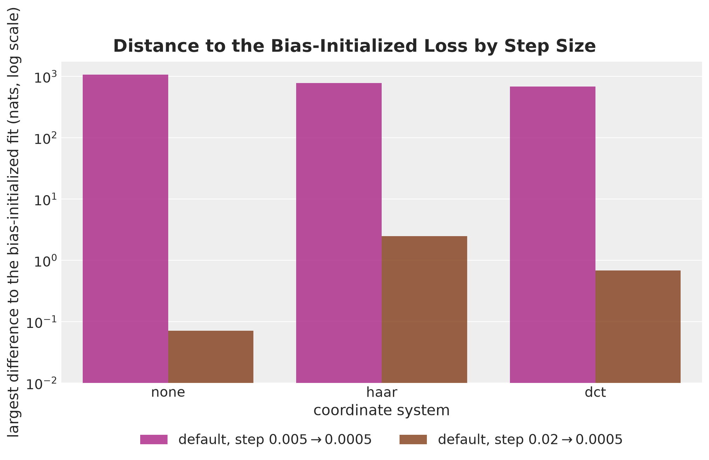
With the step size of the base fits, the largest difference is between \(680\) and \(1070\) nats. With the larger initial step size it is below \(3\) nats in every coordinate system: about \(0.1\) nats in the original coordinates, \(0.7\) with the DCT and \(2.5\) with Haar.
The larger initial step size removes the slow phase in the three coordinate systems, without an initial value for bias.
Here is what we take from these experiments. Initialize the global location parameters (here bias at the mean of the training data), or start with a larger step size. The same settings converge in the three coordinate systems. For general advice on SVI see SVI Part IV: Tips and Tricks.
Posterior and Forecast Comparison
We now judge the variational fits against a reference. For this model we do not have the exact posterior, so we use NUTS in the original coordinates.
We run \(4\) chains with \(1000\) draws each. The model is harder than the local level model, so we use \(2000\) warmup steps, as the comparison of inference methods does. We use the same initialization of bias as for the guides.
We convert the run to a DataTree with az.from_numpyro, which keeps the sampler statistics, and we check it with az.diagnose. It reports divergences, parameters with fewer than \(100\) effective draws per chain, and parameters with an \(\hat{R}\) above \(1.01\).
%%time
rng_key, rng_subkey = random.split(rng_key)
mcmc = MCMC(
NUTS(ridership_model, init_strategy=init_bias),
num_warmup=2_000,
num_samples=1_000,
num_chains=4,
progress_bar=False,
)
mcmc.run(rng_subkey, covariates_train, y_train)
nuts_reference = mcmc.get_samples()
nuts_tree = az.from_numpyro(mcmc)
az.diagnose(nuts_tree);Divergences
No divergent transitions found.
ESS
Effective sample size satisfactory for all parameters.
R-hat
R-hat values satisfactory for all parameters.
Processing complete, no problems detected.
CPU times: user 3min 27s, sys: 6min 15s, total: 9min 43s
Wall time: 1min 12sThe reference run converges, which is good! There are no divergences, and no parameter is flagged for its effective sample size or its \(\hat{R}\).
Next, we draw \(4000\) samples from each fitted guide with draw_posterior. We pack the draws of the first fit of each coordinate system, and the draws of the reference, as ArviZ DataTree objects with to_datatree from numpyro_forecast.
%%time
# The same key for every fit, so that the draws are paired across coordinate systems.
rng_key, rng_subkey = random.split(rng_key)
svi_posteriors = {
name: [draw_posterior(rng_subkey, fit.guide, fit.params, 4_000) for fit in fits]
for name, fits in svi_fits.items()
}
FIT_COLORS = {"NUTS": "black"} | {
f"SVI: {name}": color for name, color in COLORS.items()
}
# We keep one chain for every tree, so that the four trees share the same `chain` and
# `draw` coordinates.
fit_trees = {
"NUTS": to_datatree(
rng_subkey, ridership_model, nuts_reference, y_train, covariates_train
)
} | {
f"SVI: {name}": to_datatree(
rng_subkey, models[name], posteriors[0], y_train, covariates_train
)
for name, posteriors in svi_posteriors.items()
}CPU times: user 30.3 s, sys: 2.05 s, total: 32.3 s
Wall time: 6.83 sFirst, we compare the marginal posteriors of the scalar parameters for the first fit. The variational posteriors of drift_scale are very narrow, so we plot cumulative distributions, which stay readable when the widths differ.
scalar_names = ["drift_scale", "sigma", "nu"]
pc = az.plot_dist(
fit_trees,
var_names=scalar_names,
kind="ecdf",
visuals={"point_estimate_text": False},
color=list(FIT_COLORS.values()),
figure_kwargs={"figsize": (15, 4.5)},
)
pc.add_legend("model", title="", loc="outside lower center", ncols=4)
fig = pc.viz["figure"].item()
fig.axes[0].set(ylabel="cumulative probability")
fig.suptitle(
"Posterior of the Scalar Parameters: NUTS and SVI", fontsize=18, fontweight="bold"
);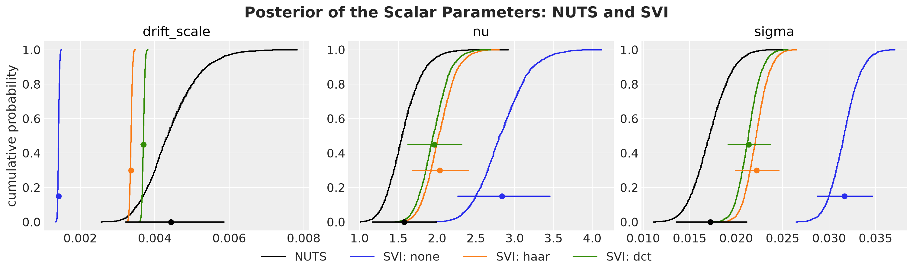
Each curve is the empirical cumulative distribution of the draws of one fit. The point is its mean and the horizontal line is its \(94\%\) HDI. A steep curve is a narrow posterior. The black curve is the NUTS reference.
The NUTS reference puts the degrees of freedom nu around \(1.6\), far from a Gaussian likelihood. In the original coordinates the fit shrinks the level: the scale of the increments drift_scale is three times smaller than the NUTS mean, and the noise scale sigma is about twice as large. This is the pattern of the local level model with unknown scales.
The rotated fits are much closer to NUTS. Their estimates of drift_scale are inside the NUTS interval, and sigma and nu move about two thirds of the way toward the reference.
A difference remains: sigma and nu are still above the reference, and the variational posterior of drift_scale is about \(20\) times narrower than the NUTS one. A mean-field guide also ignores the dependence between the global parameters and the latent path, and the rotation cannot help there, because it only changes the coordinates of the path.
Next, we compare the posterior mean of the level, which is the quantity that the forecast extends.
level_draws = {"NUTS": jnp.asarray(nuts_reference["level"])[..., 0]} | {
f"SVI: {name}": jnp.asarray(posteriors[0]["level"])[..., 0]
for name, posteriors in svi_posteriors.items()
}
level_means = pl.DataFrame(
[
{"week": int(week), "fit": name, "mean": float(value)}
for name, draws in level_draws.items()
for week, value in zip(weeks_train, draws.mean(axis=0), strict=True)
]
)
fig, ax = plt.subplots(figsize=(12, 6))
sns.lineplot(data=level_means, x="week", y="mean", hue="fit", palette=FIT_COLORS, ax=ax)
sns.move_legend(ax, "upper center", bbox_to_anchor=(0.5, -0.12), ncol=4, title="")
ax.set(xlabel="week", ylabel="level")
fig.suptitle(
"Posterior Mean of the Level: NUTS and SVI", fontsize=18, fontweight="bold"
);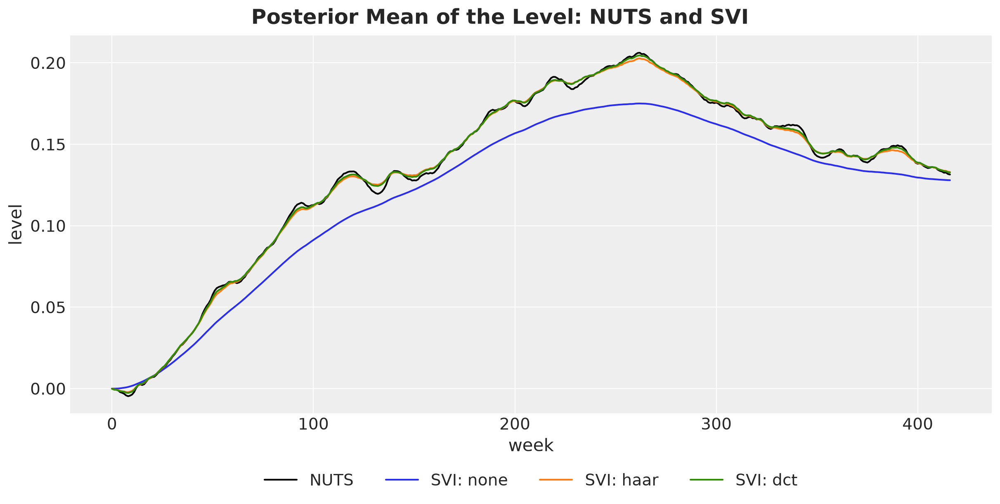
Each line is the posterior mean of the level for one fit. The rotated fits recover the path of the level: their posterior means follow the NUTS reference, while the fit in the original coordinates gives a smoother path with a smaller amplitude that misses the turns. This is the shrinkage of the level that we saw in the scale estimates.
Finally, we look at the forecasts. We generate the in-sample predictions and the \(52\)-week forecast of every fit and of the NUTS reference.
We score them with the continuous ranked probability score (CRPS), where lower is better. For an introduction to this score see Intuition behind CRPS.
We compute the scores of every fit. Then we plot the mean over the fits (bars) and the score of every fit (points), in sample and out of sample. Thin gray lines connect the three SVI fits that share a random key.
def score(
rng_key: UInt[Array, "2"], model: Model, posterior: dict[str, Array]
) -> tuple[float, float, Float[Array, "samples horizon 1"]]:
"In-sample CRPS, out-of-sample CRPS and forecast draws of a posterior."
key_train, key_test = random.split(rng_key)
in_sample = predict_in_sample(key_train, model, posterior, covariates_train)
forecast_draws = forecast(key_test, model, posterior, y_train, covariates)
return (
float(eval_crps(in_sample, y_train)),
float(eval_crps(forecast_draws, y_test)),
forecast_draws,
)
rng_key, rng_subkey = random.split(rng_key)
scores = {"NUTS": [score(rng_subkey, models[Coordinates.NONE], nuts_reference)]} | {
f"SVI: {name}": [
score(rng_subkey, models[name], posterior) for posterior in posteriors
]
for name, posteriors in svi_posteriors.items()
}
sample_labels = [
f"in-sample (train, {t_train} weeks)",
f"out-of-sample (test, {duration - t_train} weeks)",
]
crps_scores = pl.DataFrame(
[
{"fit": name, "key": key_index, "sample": sample_label, "CRPS": value}
for name, runs in scores.items()
for key_index, run in enumerate(runs)
for sample_label, value in zip(sample_labels, run[:2], strict=True)
]
)
svi_fit_names = [name for name in scores if name != "NUTS"]
fig, axes = plt.subplots(nrows=1, ncols=2, figsize=(15, 5.5), sharey=True)
for ax, sample_label in zip(axes, sample_labels, strict=True):
sample_scores = crps_scores.filter(pl.col("sample") == sample_label)
sns.barplot(
data=sample_scores,
x="fit",
y="CRPS",
hue="fit",
palette=FIT_COLORS,
alpha=0.7,
errorbar=None,
legend=False,
ax=ax,
)
sns.stripplot(
data=sample_scores, x="fit", y="CRPS", color="black", jitter=False, ax=ax
)
for key_index in range(len(svi_keys)):
ax.plot(
svi_fit_names,
sample_scores.filter(
pl.col("key") == key_index, pl.col("fit").is_in(svi_fit_names)
)["CRPS"],
color="gray",
linewidth=0.8,
alpha=0.7,
label="SVI fits with the same random key" if key_index == 0 else None,
)
ax.plot(
[], [], "s", color="gray", alpha=0.7, markersize=12, label="mean over the fits"
)
ax.plot([], [], "o", color="black", label="one fit")
ax.set(xlabel="fit", ylabel="CRPS (lower is better)", title=sample_label)
fig.legend(*axes[0].get_legend_handles_labels(), loc="outside lower center", ncol=3)
fig.suptitle("CRPS by Fit", fontsize=18, fontweight="bold");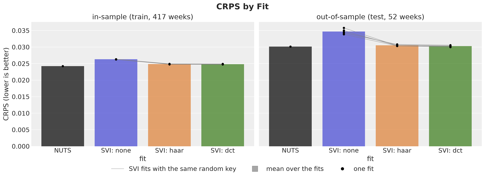
The left panel is the in-sample score, on the \(417\) training weeks, and the right panel is the out-of-sample score, on the held-out year. Each bar is the mean over the fits (five for SVI and one for NUTS), and each black point is one fit. Each thin gray line connects the three SVI fits (none, haar and dct) that use the same random key, so its slope shows the effect of the rotation for that key.
The rotated fits have a better in-sample score. Their in-sample CRPS is about \(0.025\), between the \(0.026\) of the original coordinates and the \(0.024\) of NUTS.
They also forecast better on the held-out year. The mean out-of-sample CRPS goes from about \(0.035\) in the original coordinates to about \(0.030\) with both rotations, which is the score of the NUTS reference. Every gray line ends lower at both rotated fits, so the gain holds for each of the five random keys.
Haar and DCT are close: the difference between their means is smaller than the spread over the random keys, which is itself below \(0.002\).
We end with the forecasts themselves. We use az.plot_lm to plot the forecast of the NUTS reference, of the first fit in the original coordinates, and of the first DCT fit.
forecast_fits = ["NUTS", "SVI: none", "SVI: dct"]
# `az.plot_lm` draws one panel per variable, and each variable needs its own x variable.
# The three fits have the same number of draws.
forecast_tree = az.from_dict(
{
"posterior_predictive": {
name: np.asarray(scores[name][0][2][..., 0])[None] for name in forecast_fits
},
"observed_data": {name: np.asarray(y_test[:, 0]) for name in forecast_fits},
"constant_data": {
f"week ({name})": np.asarray(weeks_test, dtype=float)
for name in forecast_fits
},
},
coords={"time": np.asarray(weeks_test)},
dims={name: ["time"] for name in forecast_fits}
| {f"week ({name})": ["time"] for name in forecast_fits},
)
pc = az.plot_lm(
forecast_tree,
y=forecast_fits,
x=[f"week ({name})" for name in forecast_fits],
smooth=False,
color=[FIT_COLORS[name] for name in forecast_fits],
aes_by_visuals={"pe_line": ["color"]},
visuals={
"pe_line": {"label": "posterior mean"},
"ci_band": {"alpha": 0.3, "label": "$94\\%$ HDI"},
"observed_scatter": False,
},
col_wrap=1,
figure_kwargs={"figsize": (12, 11), "sharex": True, "sharey": True},
)
fig = pc.viz["figure"].item()
for ax, name in zip(fig.axes, forecast_fits, strict=True):
ax.plot(weeks_test, y_test[:, 0], color="C3", alpha=0.9, label="observed (test)")
ax.set(xlabel="", ylabel="log(rides)", title=name)
ax.legend(loc="lower left")
fig.axes[-1].set(xlabel="week")
fig.suptitle("Forecasts of the Held-Out Year", fontsize=18, fontweight="bold");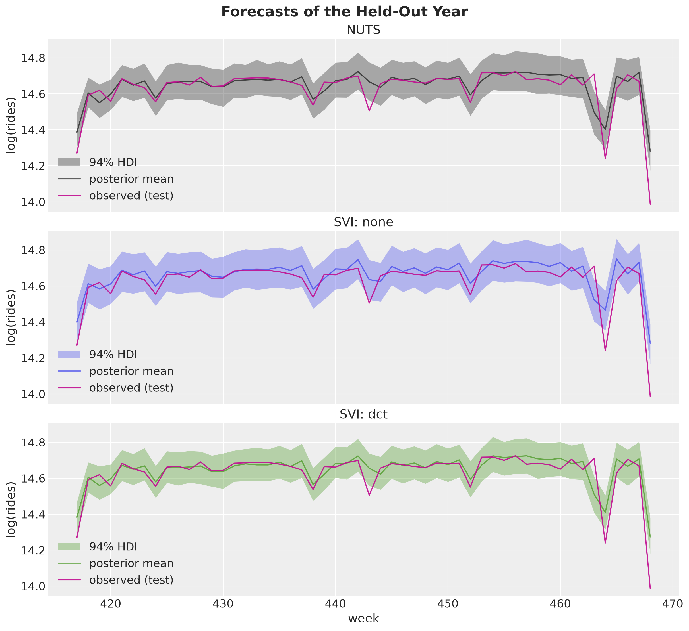
Each panel is the forecast of one fit for the \(52\) held-out weeks. The solid line is the posterior mean and the band is the \(94\%\) HDI, both in the color of the fit. The magenta line is the observed series.
The three forecasts follow the seasonal pattern, which the regression on the Fourier features captures in every fit. The DCT forecast is closer to the NUTS forecast, and the band of the fit in the original coordinates is wider, consistent with its larger noise scale sigma. The largest holiday drops are outside every band. The heavy-tailed likelihood treats them as outliers and keeps the band narrow instead of widening it to cover them.
Conclusion
We studied the Haar and DCT reparameterizations of time-indexed latent variables in NumPyro. We cnsidered two examples: a local level model with an exact posterior and on a ridership forecasting model. In both of them we saw how the rotation trick can help the mdoel fir better with SVI and AutoNormal guides (mean field approximation).
Key Findings
The reparameterization is a rotation. It samples the latent path in an orthonormal basis. The model is unchanged and the guide sees different coordinates.
The posterior of a random walk is coupled along time. The data constrain the smooth combinations of the increments and leave the oscillating ones at the prior. A mean-field guide cannot represent this coupling in the original coordinates.
A basis sorted from coarse to fine removes most of the coupling. Both bases bring the mean-field guide much closer to the posterior. The DCT was better in both models, by a few nats.
The scale estimates and the forecasts improve. In the original coordinates the mean-field guide shrinks the level and inflates the noise. In the rotated coordinates the scale estimates move toward the NUTS reference, and out of sample the rotated fits match the NUTS CRPS.
The coarse coefficients stay coupled. In the local level model the rotated guides make the level too certain at the end of the series, which is the forecast origin.
Recommendations
Try
time_reparamwith mean-field guides.time_reparam(model, "dct")is one line and leaves the model code as it is.Initialize the global parameters, or start with a larger step size. Then compare the final loss across random keys to check convergence, and across coordinate systems to pick the basis.
Check the uncertainty of the level at the forecast origin. In the local level model the rotated mean-field guides make it too small there.
Keep a NUTS reference (whenever possible). The ELBO alone does not say how much bias is left.
Expectations for NUTS
We did not run NUTS in the rotated coordinates in this notebook. The coupling along time does not bias NUTS, but with a diagonal mass matrix it slows it down. The rotation may help, at the price of one transform per leapfrog step.
The comparison of inference methods of numpyro_forecast measures this on the ridership model of the documentation example, with the centered site sampled. With the DCT, the effective sample size per second is about \(9\) times higher.
Dense or low-rank mass matrix adaptation, as in nutpie and BlackJAX, addresses the same coupling without a change of coordinates. We have not compared the two.